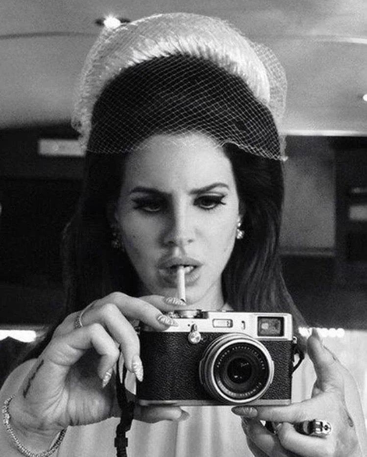

Sound & Style

Musical style
Del Rey has been labeled an "alt-pop" artist. Her works have been variously categorized as pop, rock, dream pop, baroque pop, indie pop, psychedelic rock, while incorporating trip hop, hip hop, lo-fi, and trap elements. Upon her debut release, Del Rey's music was described as "Hollywood sadcore" by some music critics. It has been repeatedly noted for its cinematic sound and its references to various aspects of pop culture; both critics and Del Rey herself have noted a persistent theme of 1950s and 1960s Americana. The strong elements of American nostalgia brought Idolator to classify her firmly as alternative pop. Del Rey elaborated on her connection to the past in an interview with Artistdirect, saying "I wasn't even born in the '50s but I feel like I was there."
Of Born to Die, AllMusic said that its "sultry, overstated orchestral pop recast her as some sort of vaguely imagined chanteuse for a generation raised on Adderall and the Internet, with heavy doses of Twin Peaks atmosphere". Del Rey's subsequent releases would introduce variant styles, particularly Ultraviolence, which employed a guitar-based sound akin to psychedelic and desert rock. Kenneth Partridge of Billboard noted this shift in style, writing: "She sings about drugs, cars, money, and the bad boys she's always falling for, and while there remains a sepia-toned mid-century flavor to many of these songs, [Del Rey] is no longer fronting like a thugged-out Bette Davis." Upon the release of Honeymoon, one reviewer characterized Del Rey's body of work as being "about music as a time warp, with her languorous croons over molasses-like arrangements meant to make clock hands seem to move so slowly that it feels possible, at times, they might go backwards".
Prior to coming to prominence under the stage name Lana Del Rey, she performed under the names Lizzy Grant, Lana Rey Del Mar, Sparkle Jump Rope Queen, and May Jailer. Under the stage name Lizzy Grant, she referred to her music as "Hawaiian glam metal", while the work of her May Jailer project was acoustic.
Voice
Del Rey possesses an expansive contralto vocal range, which spans three-plus octaves and has been described as captivating and highly emotive, ranging with great ease from high notes in a girlish timbre to jazzy ornaments in her lower register. Following the release of Ultraviolence, which was recorded live in single takes and lacking Pro Tools vocal editing, critics increasingly appreciated Del Rey's vocal ability, praising her large range, increased vocal confidence, and uniquely emotive delivery. When recording in the studio, Del Rey is known for vocal multi-layering, which, as it has been noted, is difficult for her to replicate within a live setting, especially with the lack of backing singers to fill out the original vocal style. Stage fright has also been noted as a major contribution to Del Rey's struggles with live performances; however, journalists noted in 2014 her live performances had increased in confidence. Billboard deemed the Coachella debut of "West Coast" to be a "star-making performance" and lauded the singer's vocal abilities. Music critics have called her voice "smoky", "gravelly", and reminiscent of Marilyn Monroe. Upon the 2015 release of Honeymoon, her voice was compared by Los Angeles Times critic Mikael Wood to those of Julee Cruise and Eartha Kitt.
Del Rey began using lower vocals with Born to Die, claiming "people weren't taking me very seriously, so I lowered my voice, believing that it would help me stand out. Now I sing quite low... well, for a female anyway". "I sing low now, but my voice used to be a lot higher. Because of the way I look, I needed something to ground the entire project. Otherwise I think people would assume I was some airhead singer. Well, I don't think... I know. I've sung one way, and sung another, and I've seen what people are drawn to", she said on the topic.
Themes and image
Del Rey's videos are also often characterized for their cinematic quality with a retro flair. In her early career, she recorded clips of herself singing along to her songs on a webcam and juxtaposed them alongside vintage home videos and films to serve as "homemade music videos", a style which helped gain her early recognition. After the success of these homemade videos, Del Rey had a series of high-budget music videos, including "Born to Die" and "National Anthem" (both 2012) and "Young and Beautiful" (2013). Her early videos featured her personas "bad girl" and "gangster Nancy Sinatra".
Her videos for tracks after that including "Summer Wine", "Carmen", and "Summertime Sadness" were produced off of significantly lower budgets and retained more elements of Del Rey's earlier style. The Ultraviolence era incorporated an admixture of high budget videos and self-made ones, while the Honeymoon era was almost strictly film noir-influenced professionally-shot visuals. Both eras saw some of Del Rey's homemade videos for tracks such as "Pretty When You Cry" and "Honeymoon" go unreleased due to Del Rey's opinions they were "too boring". The Lust for Life era was widely characterized for its mildly filtered vintage-inspired look with a futuristic flair. For Norman Fucking Rockwell!, Del Rey's sister, Chuck Grant, directed three videos in Del Rey's "homemade video" format, while Rich Lee directed the two following videos in a vintage but futuristic style, similar to the Lust for Life videos he directed.
Critics have noted Del Rey for her typically simple but authentic live performances. A September 2017 concert review published in The New York Times noted: "For more than an hour, Ms. Del Rey was eerily casual, singing and smiling with the ease of someone performing at singer-songwriter night at the local coffee shop." Another review by Roy Train for The Hollywood Reporter in 2014 noted "a distance in her bonhomie, obvious even from my perch at the opposite end of the stage high above the fray, the chill still palpable".
Influences
Del Rey cites a wide array of musical artists as influences, including numerous pop, jazz, and blues performers from the mid-twentieth century, such as Andrew Lloyd Webber, Frank Sinatra, Nina Simone, Billie Holiday, Bobby Vinton, The Crystals, Brian Wilson, Nancy Sinatra, and Miles Davis. Torch singers Julie London and Julee Cruise have also served as influences. "[I really] just like the masters of every genre", she told BBC radio presenter Jo Whiley in 2012, specifically naming Nirvana, Bob Dylan, Frank Sinatra, and Elvis Presley.
Several rock and pop musicians and groups from the late-twentieth century have also inspired Del Rey, such as Bruce Springsteen, Britney Spears, singer-songwriter Lou Reed, and rock band the Eagles, as well as folk musicians such as Leonard Cohen and Joan Baez. Del Rey has also named singer-songwriter Cat Power, Hole frontwoman Courtney Love, rapper Eminem, and singer-songwriter Amy Winehouse as artists she looked up to. Del Rey has cited the soundtrack to American Beauty as a partial inspiration for her album Born to Die (2012).
Inspired by poetry, Del Rey cites Walt Whitman and Allen Ginsberg as instrumental to her songwriting. In her song "Venice Bitch", the lyric "nothing gold can stay" is also the title of a Robert Frost poem. Del Rey has cited film directors, David Lynch and Federico Fellini, and painters, Mark Ryden and Pablo Picasso, as influences and has stated actress Lauren Bacall is someone she admires. She has an interest in and was influenced by the book Lolita and the title character, as well as the films it spawned in 1962 and in 1997. She has demonstrated Lolita fashion in the past and even wrote a same-titled song, included as a bonus track on some editions of her 2012 album Born to Die.
Legacy
Widely considered one of the most influential singers of the 2010s, Del Rey helped shift how listeners view authenticity in pop music. She has consistently been mentioned as a major influence by a number of artists, including The Weeknd, Billie Eilish, Finneas, XXXTentacion, Charli XCX, Clairo, Troye Sivan, Beabadoobee, Slayyyter, Madison Beer, BØRNS, Taylor Swift, Zella Day, Gracie Abrams, Selena Gomez, Kacey Musgraves, Daniel Seavey, Suki Waterhouse, Jesse Jo Stark, Addison Rae, Kali Uchis, Jesse Rutherford, Banks, Ethel Cain, Chappell Roan, Niall Horan, Nessa Barrett, Olivia Rodrigo and Conan Gray. Billboard credited Born to Die with being one of the main catalysts for pop music's shift from an overall brash EDM tone to a moodier, hip-hop-inflected palette in the mid-2010s, and opined that Del Rey is indispensable to the decade's pop music, having influenced alternative-leaning pop artists such as Lorde, Halsey, Banks, Sky Ferreira, Father John Misty, Sia, Miley Cyrus, Selena Gomez and Taylor Swift. In 2019, Billboard included "Born to Die" amongst the 100 songs that defined the 2010s, adding that it marked "a sonic shift that completely changed the pop landscape". Norman Fucking Rockwell! was named one of the "500 Greatest Albums of All Time" by Rolling Stone. Del Rey has received praise from older artists, some of whom have been inspirations to Del Rey herself, including Bruce Springsteen, Joan Baez, Elton John, Courtney Love, and directors David Lynch and John Waters.
The Washington Post listed Del Rey as the only musician on their "Decade of Influence" list. Pitchfork named her one of the greatest living songwriters of the US. The Guardian declared Del Rey's own "pure female haze" a "hallmark of the defiant female pop stars to come". Her YouTube and Vevo pages have combined views of over seven and a half billion. In 2022, New York University's Clive Davis Institute of Recorded Music launched the fall semester course "Topics in Recorded Music: Lana Del Rey", which deals with Del Rey's music. Rolling Stone ranked Del Rey at number 175 on its 2023 list of the 200 greatest singers. Rolling Stone UK named her the Greatest American Songwriter of the 21st century (2023).